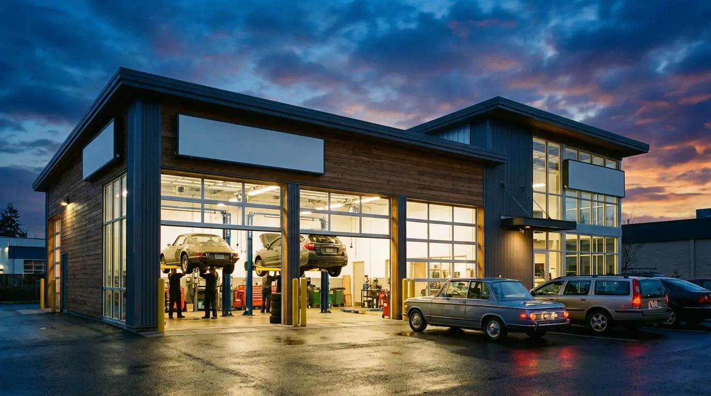

Home / Warranty & Roadside
Covered here. Covered everywhere.
Fallon Automotive is an authorized TechNet Professional Automotive Service Center — which means our repairs travel with you, anywhere in North America.
24 months or 24,000 miles — whichever comes first
Every qualifying service and repair we perform is automatically covered by the TechNet Nationwide Warranty. If a covered repair fails while you're 500 miles from Sterling, any participating TechNet shop — thousands of them across the U.S. and Canada — will honor it.
- ✓ Automatic — no sign-up, no extra cost
- ✓ Covers parts and labor on qualifying repairs
- ✓ Honored at thousands of shops nationwide
- ✓ Keep your invoice — that's your proof of coverage

Help when you're stuck
Flat tire on Route 28? Dead battery at Dulles? As part of the TechNet program, our customers have access to roadside assistance so a bad moment doesn't become a bad day.
- ✓ Towing assistance
- ✓ Flat tire & battery jump-start help
- ✓ Lockout & fuel delivery service
Ask us for your roadside assistance details at your next visit — coverage terms are provided with qualifying service.
Warranty FAQ
Do I need to register or pay for the warranty?
No. Coverage is automatic on qualifying repairs performed at Fallon Automotive. Your itemized invoice is your proof of coverage — keep it with your vehicle records.
What happens if a repair fails away from Sterling?
Call the TechNet warranty line on your invoice and they'll direct you to the nearest participating repair facility. The covered repair is handled there under the same terms.
What does the warranty cover?
Parts and labor on qualifying repairs for 24 months or 24,000 miles, whichever comes first. Some items — like normal wear and maintenance — fall outside coverage; we'll always tell you which category your repair falls in before work begins.
Does it matter which Fallon location did the work?
Not at all. Both our Markey Ct and Underwood Ln shops are covered under the same program and the same standard.
Repairs that travel with you.
Book with a shop that stands behind its work — everywhere.